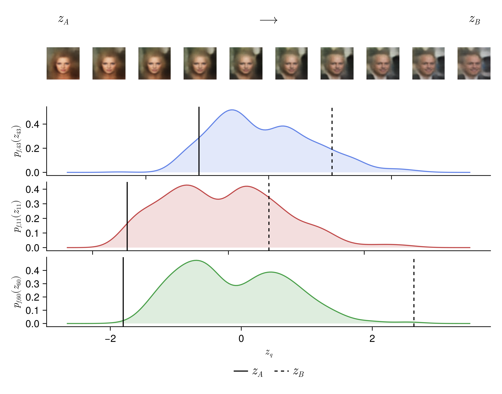
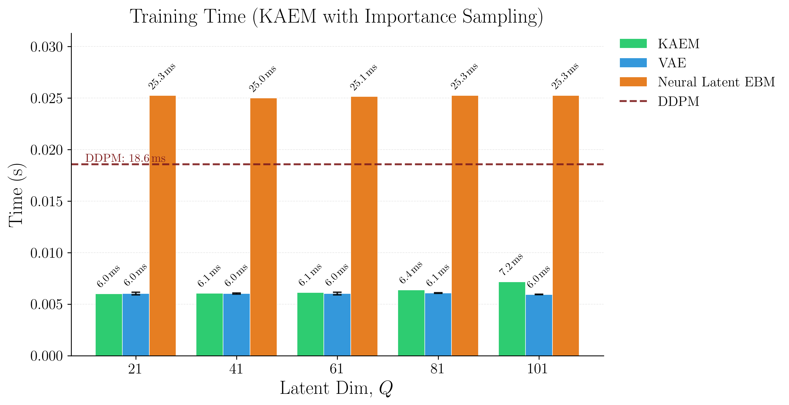

KAEM: Kolmogorov-Arnold Energy Model
Generative models succumb to trade-offs. GANs sacrifice training stability, VAEs sample quality, diffusion inference speed. KAEM addresses all three.
Read the paper →What are the requirements for discovering the true, agreed-upon, standard representations across images, language, and scientific data?
- standardised
- sustainable
- interpretable
- informed
- accessible
Standardised
The Kolmogorov-Arnold Representation Theorem decomposes any continuous multivariate function into a finite sum of univariate ones. Finite. Deterministic. Capable of representing anything.
That isn't readily applied to probabilistic modelling. KAEM gets there by
reinterpreting the inner functions
ψ_{q,p} : [0,1] → ℝ
as Markov kernels: inverse CDFs acting on uniform noise on [0,1].
Inverse transform sampling becomes a measurable map from uniform noise into the target, so KART's deterministic structure is preserved and a probabilistic interpretation falls out without injecting stochasticity into the representation.
The result is one skeleton across modalities. First application of deterministic representation to generative modelling. You don't refit the architecture every time the domain changes.
Sustainable
Wu et al. (2022) report a 30 : 29 : 41 lifecycle split for an industrial-scale language model, across data processing, experimentation/training, and inference ( arXiv 2111.00364 ).
Inference is the largest slice, KAEM keeps it single-pass. Annealing only runs during training, and parallelises across temperatures instead of paying a sequential cost every generation.
Experimentation is also large. A standardised representation with strong inductive bias reduces the architecture search/tuning.

Interpretable
The prior is a product of 1D densities. You can plot them. Modes and tails are easily visible. SLERP traversals on the latent have a meaning you can read off the plot.

Informed
Three places to inject what you know about the problem:
- the reference prior
- the generator architecture
- the choice of univariate basis functions
Pick the ones that match the domain, KAEM's architecture enables you.
Accessible
KAEM is a robust probabilistic model. It can run on laptops.
With the correct priors and biases, posterior expectations can be estimated with importance sampling. No large, amortised encoder. Just a sample-based estimator with no parameters of its own. Plus, generation/inference is a fast, single-pass, exact inverse transform on uniform noise. No MCMC at inference.
The univariate 1D priors are easy to plot and understand. A domain expert without a computational-statistics background can read them.

Benchmarks
FID and KID are biased in two ways. 1. InceptionV3 is trained on ImageNet, so
the score favours ImageNet-like distributions. Extrapolation can't fix this. 2.
FIDₙ is finite-sample biased:
E[FIDₙ] ≠ FID∞
, and the bias depends on the generator, so fixed-N comparisons are unreliable.
We use effectively unbiased estimators by applying linear regression across
sample sizes 2000 to 20,000 in steps of 2000 extrapolates to N=∞ (
arXiv 1911.07023
). This gives FID∞ and KID&infin, which are what you'd find with infinite
samples.
Best marked among latent-prior models. DDPM shown as a pixel-space reference at ~700x slower inference. KID∞ tracks FID∞; full table in the paper.
KAEM (MLE) wins SVHN and CIFAR10. On CelebA the annealed variant takes over: KAEM (Thermo) beats MLE at 108.0 vs 126.9, consistent with the paper's premise that parallel tempering pays off on multimodal posterior manifolds.